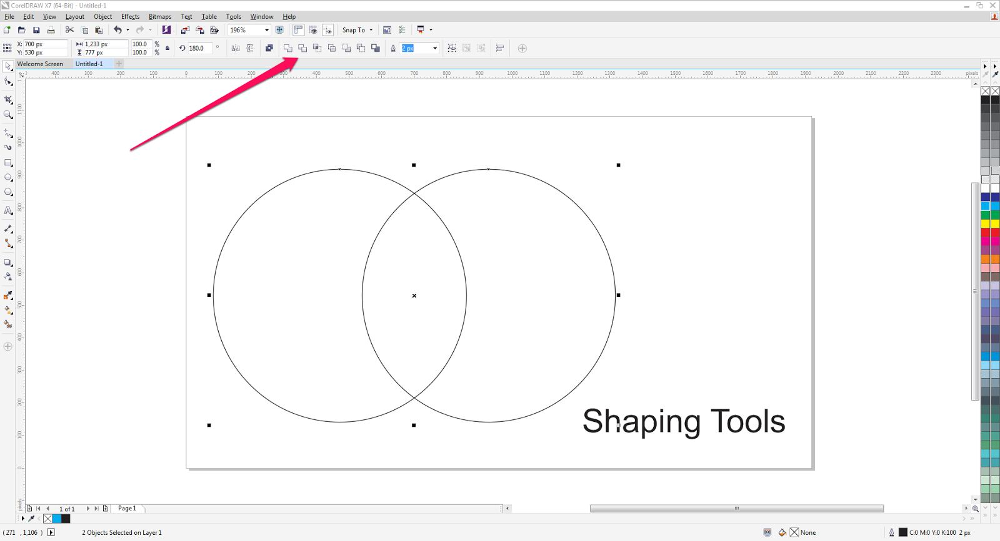
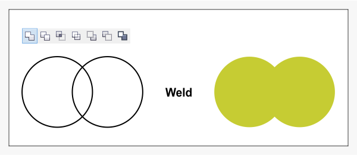
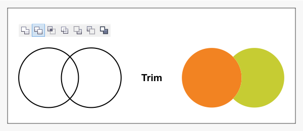
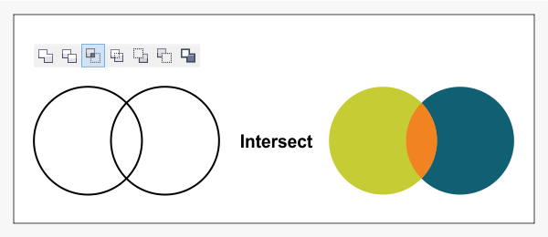
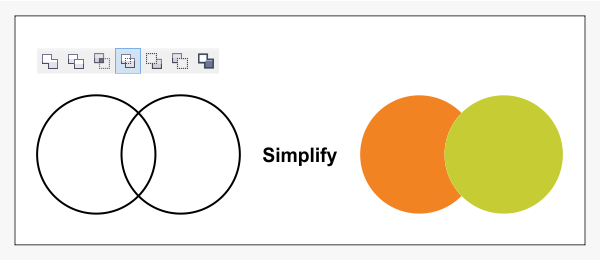
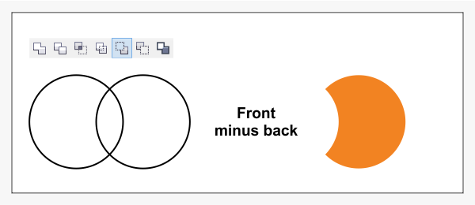
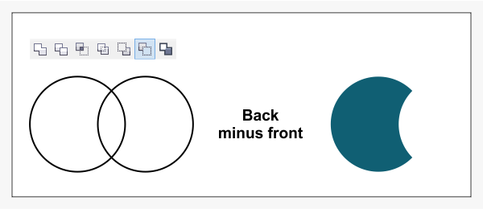
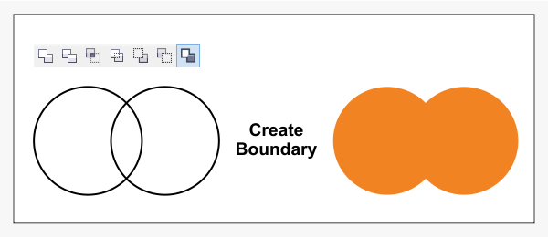

Proudly Powered by
designer.web.id#
Shaping Tool#
Dalam tutorial ini kita akan belajar bagaimana menggunakan Shaping Tools di CorelDRAW yang dilengkapi dengan contoh.
Setelah membaca tutorial ini, kita akan tahu cara menggunakan alat-alat Shaping seperti Weld, Trim, Intersect, Simplify, Front Minus Back, Back Minus Front, dan Create Boundary.

Weld#
Alat ini menggabungkan semua benda yang dipilih menjadi objek tunggal dengan mengisi tunggal dan garis. Di sebelah kanan kami sudah mewarnai hasilnya untuk memberi pemahaman yang lebih baik.

Weld#
Dengan tool ini kita dapat memotong bagian dari sebuah objek dengan menggunakan bentuk objek yang dipilih lain. Weld dan Trim mungkin merupakan fungsi yang paling digunakan dari CorelDRAW. Kita dapat menggunakan fungsi ini untuk membuat objek sederhana atau rumit.

Intersect#
Pilih dua atau lebih objek dan klik Intersect. Kita akan mendapatkan objek baru di daerah di mana objek tumpang tindih. Objek baru disini kami warnai oranye.

Simplify#
Fungsi ini akan memotong daerah tumpang tindih antara objek-objek. Kita dapat melihat bagaimana lingkaran orange dipotong dari hijau.

Front minus back#
Dengan fungsi ini kita dapat menghapus objek di bagian belakang dengan objek yang di depannya.

Back minus front#
Kebalikannya dari Front minus back, Dengan tool ini kita dapat menghapus objek di bagian depan dengan objek dibelakangnya.

Create Boundary#
Dengan Boundary kita akan mendapatkan objek baru yang mengelilingi objek yang dipilih.

Beberapa menu mungkin terlihat sama atau menghasilkan hasil akhir yang sama. Shaping Tools ini adalah sepenuhnya tentang pengalaman pengguna. Kita hanya perlu membiasakan menggunakan tools ini dengan mencobanya satu-persatu.